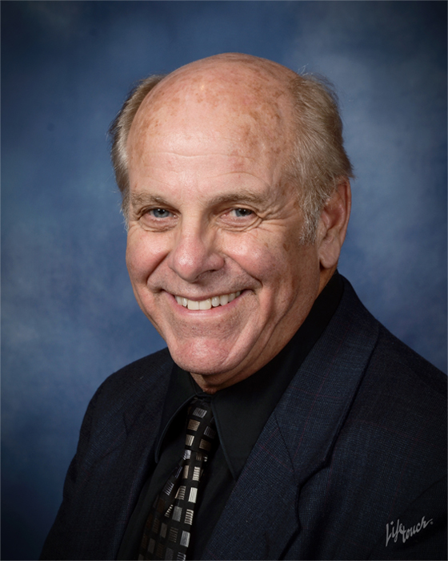
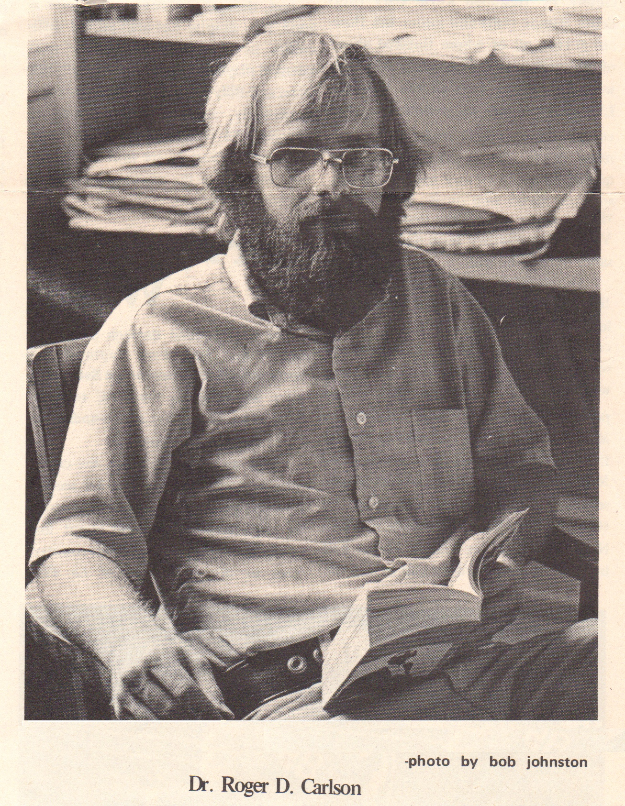
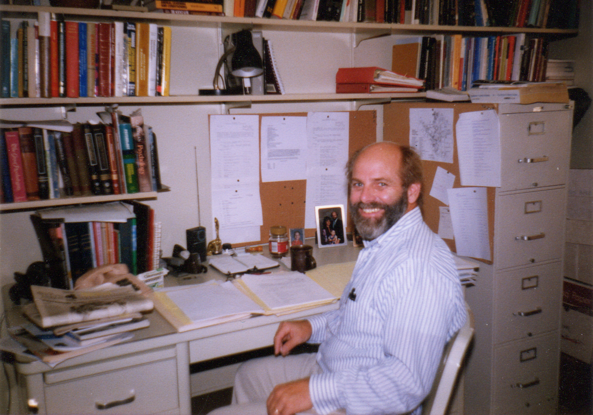

Philosophy of Practice
Born in Berkeley, California, and raised in the next city to the north, El Cerrito, my first move was to Sacramento in which I lived during the northern California countercultural post-Beatnik and pre-hippie years of the 1960’s. During those years and under the influence of my A.B. and M.A. major advisor Harry Aron, Ph.D., I became a critical thinker of many cultural truisms and skeptic regarding the cultural mainstream. I have since consistently identified with and endorsed various manifestations of the U.S. counterculture beginning with the anti-war and peace movements to “Occupy Wall Street” and “Our Revolution.” I have also come to support those with alternative life styles.
During my undergraduate years, I came to value Freudian and Reichian psychoanalysis, sexual liberation, and epistemology and philosophy of science. The work of Thomas Szasz, (author of The Myth of Mental Illness), Ronald Leifer (author of In the Name of Mental Health), Michel Foucault (author of Madness and Civilization), and Ken Kesey (author of One Flew Over the Cuckoo’s Nest) were highly influential on my views on the “mental illness” concept. During that time of the “Sexual Freedom League,” and other libertarian trends (e.g. “free love,” “nude encounter groups,”) I also became acquainted with the work on sexuality done by Alfred Kinsey, et al, Masters and Johnson, and sexologist Albert Ellis who guided me to my eventual certification in AASECT and a sex positive practice that supports those in the LGBTQ community and those involved in alternative life styles (e.g. polyamory).
Whereas my undergraduate and early graduate school work in psychology was highly empirically grounded on British tradition of logical positivism (central to which was the “Vienna Circle” composed of people like Bertrand Russell and the early Ludwig Wittgenstein), the philosophical shift from those influences was due to serious critiques of logical positivism done in the later work of Wittgenstein whose “ordinary language” philosophy which tended to undermine or call into question the foundations of psychological research. British Cambridge Trinity College philosopher John Wisdom (author of Philosophy and Psychoanalysis) who was student, protégé, and colleague of Wittgenstein, served on my University of Oregon doctoral dissertation committee and was adviser of post-doctoral work at Cambridge University.
With these perspectives in mind, I felt that medical model of psychiatry and methods used clinical psychology led to oppression and conformity to socio-cultural norms, and that empirical experimental psychology resting on the assumption that one can attain “objectivity” (including reductionism to genetics, brain science, or artificial intelligence modeling) was an ill-begotten pursuit.
Later neo-structuralist continental philosophical work of Michel Foucault on language (archeology of knowledge), Derrida’s post-modernist perspectives, and Slavoj Zizek have been intellectually influential on my current philosophical perspectives which guide my intellectual work in psychology and theology.
I grew up within the context of the Methodist Church. During college I was interested in learning about Buddhism, Taoism, and Meher Baba movement. During my years of teaching in the scientific tradition of experimental psychology, it seemed to me that professional mainstream scientific psychology paid very little serious attention to the spiritual dimension of human experience. During my post-doctoral study in the Dept. of History and Philosophy of Science at Cambridge, the controversy between science vs. religion was at its peak, and I learned of the scholarly traditions of religious and biblical study. Eventually that led me to earn the three-year M.Div. degree at the inter-religious Pacific School of Religion in Berkeley. During that time, I was highly influenced by my friend, colleague, and professor Biblical scholar Marcus Borg and Bishop John Shelby Spong (especially on his views toward sexuality and the church). I align my theology and spirituality most closely with Mark Taylor’s post-modern theology and my views on sexuality and the church with those of Frank Lawrence (author of Sexual Liberation).
I have been ordained in the United Methodist Church and served in full-time and part-time pastoral ministry for 21 years. My hope and optimism for positive changes makes my practice is “faith-based” (not “Christian counseling,” per se) in the broadest sense of that term, and when appropriate incorporates perspectives that spiritually fulfilling from a variety of perspectives (such as Taoism and Buddhism).
I have taught 40 titles of courses in psychology at a number of colleges and universities over a period of 36 years.
While my A.B. and M.A. degrees were taken in psychology, my Ph.D. is interdisciplinary (in psychology, education, philosophy, literature) from the lifespan Human Development program at University of Oregon. First licensed as a psychologist from 1977-1986 in Pennsylvania, my practice emphasized adolescent and adult development from a preventive and holistic health perspective. For that period, I worked in medical environments with physicians, a registered dietician, and massage therapist. I also incorporated into my practice the work I took with Theodore X. Barber in hypnosis, and work with Masters and Johnson in human sexuality. Since 2001, I’ve been licensed in California, Oregon, and Washington in which my specialties have been clinical hypnosis, and sex therapy. I have also done work in geriatric psychotherapy.